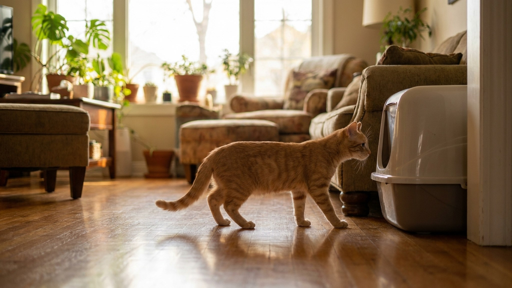

Хорошая новость: у кошек есть инстинкт закапывать выделения в рыхлую субстанцию. Плохая: этот инстинкт надо направить именно в нужное место. У большинства котят обучение проходит за 2-5 дней. Проблемы возникают из-за ошибок человека — неправильное место, не тот наполнитель, слишком высокие борта, плохая гигиена. Разбираем всё по порядку.
🐾 Дневник здоровья питомца — в кармане
Вес, прививки, симптомы и напоминания в одном приложении. AnimaLife следит за здоровьем питомца вместо вас.
Как только котёнок оказался дома, первое, что нужно сделать — показать лоток. Буквально: взять котёнка, поднести к лотку, поставить внутрь. Дать понюхать наполнитель. Лапкой слегка поскрести наполнитель — показать движение.
Котёнок запоминает место по запаху и текстуре. Первое использование лотка закрепляет паттерн. Важно: не показывать лоток через час после приезда — сразу, как приехали. Пока стресс новой обстановки не заблокировал восприятие.
Правило первых двух часов: котёнка не отпускать далеко. Наблюдайте. Как только заметили, что нюхает пол, приседает, скребёт — немедленно в лоток. Ловите момент, а не ошибку.
День 1: показать лоток немедленно. Поместить в лоток после каждого кормления (котята часто ходят в туалет через 10-15 минут после еды) и после сна. Наблюдать постоянно.
День 2-3: котёнок начинает сам идти к лотку. Продолжайте относить после кормлений. Хвалите голосом сразу, как только котёнок сделал дела в лотке — не через минуту, а сразу.
День 4-5: если ошибок нет — котёнок освоился. Можно чуть расширить доступную площадь. Если ошибки есть — вернитесь к ограниченному пространству (одна комната).
День 6-7: оцените результат. Устойчивое использование лотка без подсказок = навык закреплён. Ошибки в этот период — сигнал переосмыслить место лотка, наполнитель или частоту уборки.
Место лотка — критически важная переменная. Кошки не ходят в туалет там, где едят или пьют. Кошки не ходят в шумных, людных, труднодоступных местах. Кошки бросают лоток, если он грязный или пахнет чистящим средством с сильным запахом.
Рынок наполнителей в 2025-2026 году предлагает несколько устоявшихся категорий. Выбор влияет на то, примет ли котёнок лоток.
Комкующийся бентонитовый (глиняный):
Силикагелевый (кристаллы):
Древесный (пеллеты или мелкий):
Растительный (кукурузный, тофу, из пшеницы):
Что выбрать для котёнка: комкующийся мелкий без сильного запаха (без ароматизаторов). Ароматизированные наполнители часто отпугивают кошек — запах для них слишком интенсивный, и они отказываются от лотка. Начните с нейтрального, добавляйте ароматизатор только если нет проблем с посещением.
Для котёнка до 6 месяцев — открытый лоток с низкими бортами. Котёнок должен легко залезть и вылезти. Высота борта спереди — не более 3-4 см. Высокие борта или закрытые домики с дверцей котёнок может просто не преодолеть физически или не решиться зайти.
Размер лотка: 1,5 длины тела кошки. Котёнок вырастет — берите лоток с запасом или планируйте замену через 4-5 месяцев.
Во-первых — не паниковать. Это нормальная часть обучения. Алгоритм действий:
🐾 Не уверены, что это опасно?
Опишите симптом в AnimaLife — AI-ветеринар за минуту подскажет, что в пределах нормы, а когда пора к врачу.
Правило «N+1» — не теория, а практическая необходимость. Одному котёнку нужно минимум два лотка, особенно в первые месяцы. Вот почему:
Расположение второго лотка: в другой комнате или в другом конце той же комнаты. Два лотка рядом — воспринимаются кошкой как один большой лоток.
Лоток — место уязвимости. Кошка в туалете сосредоточена, спиной к возможной угрозе, с ограниченным обзором. Любой негативный опыт в этот момент или рядом с лотком — пугает и формирует стойкое избегание.
Типичные стрессовые триггеры:
Решение: убрать стрессор. Переставить лоток подальше от шумной техники. Не подходить к котёнку, когда он в лотке. Дать время адаптироваться к изменениям. При появлении нового животного — добавить ещё один лоток на нейтральной территории.
Котята, выросшие у заводчика, как правило, уже приучены к лотку матерью. Они знают концепцию. Задача хозяина — показать конкретный лоток на конкретном месте в новом доме. Обычно это занимает 1-2 дня.
Котята из приюта или с улицы — другая история. Они могли никогда не видеть лотка. Инстинкт закапывать — есть, но паттерн «лоток в квартире» — незнакомый. Требуется больше времени и терпения. Алгоритм тот же, но на отработку уйдёт 7-14 дней вместо 3-5.
Котята, разлучённые с матерью слишком рано (до 6-7 недель), иногда не имеют сформированного паттерна — мать не успела показать. Они учатся с нуля. Чаще имеют и другие поведенческие трудности.
Важно: если котёнок из приюта явно не понимает концепцию лотка через 2 недели при правильных условиях — консультация с ветеринарным поведенческим специалистом или vet-AI. Иногда за этим стоит медицинская причина: инфекция мочевыводящих, диарея, боль.
Кошка — чистоплотное животное по природе. Проблемы с лотком в 95% случаев — это проблема условий, которые создал человек, а не сложность котёнка. Низкий чистый лоток в тихом доступном месте, нейтральный наполнитель без ароматизаторов, уборка каждый день — и большинство котят справляются за неделю без всякого специального обучения.
Терпение и наблюдение в первые 7 дней стоят дороже любых специальных методов. Ловите момент — ведите к лотку. Хвалите успех сразу. Не наказывайте за ошибки. Этого достаточно.